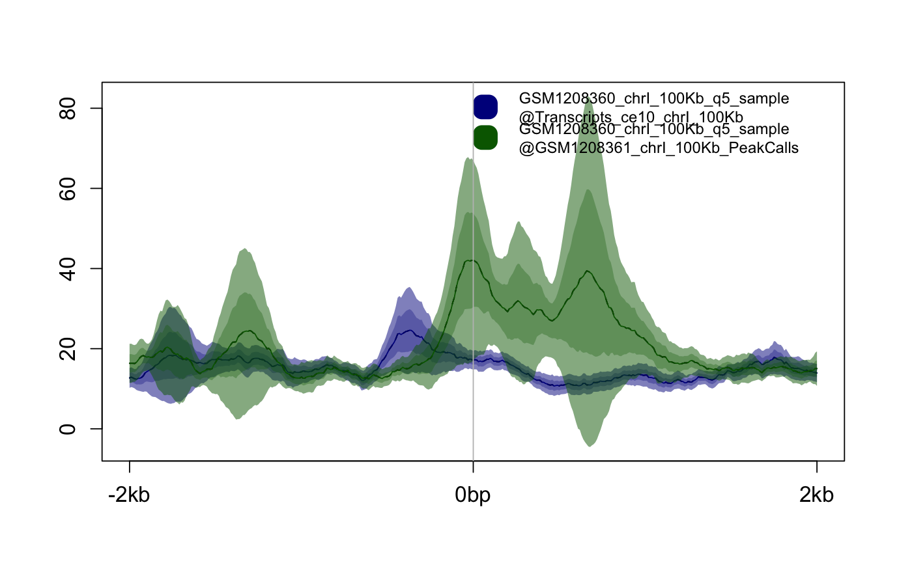

Draw an average plot from PlotSetArray,
PlotSetList, PlotSetPair or properly formatted
list in active graphics window. Axes and titles, keys and
other plot elements are controlled by function parameters.
plotAverage(plotset, keepratio = FALSE, labels = NULL, xlim = NULL, ylim = NULL, main = NULL, xlab = "", ylab = "", plotScale = "linear", type = "full", error.estimates = TRUE, legend = TRUE, legend_ext = FALSE, legend_pos = "topright", legend_ext_pos = "topleft", cex.axis = 14, cex.lab = 16, cex.main = 20, cex.legend = 10, ln.v = TRUE, ln.h = NULL, colvec = NULL, pointsize = 12, ...) # S4 method for list plotAverage(plotset, keepratio = FALSE, labels = NULL, xlim = NULL, ylim = NULL, main = NULL, xlab = "", ylab = "", plotScale = "linear", type = "full", error.estimates = TRUE, legend = TRUE, legend_ext = FALSE, legend_pos = "topright", legend_ext_pos = "topleft", cex.axis = 14, cex.lab = 16, cex.main = 20, cex.legend = 10, ln.v = TRUE, ln.h = NULL, colvec = NULL, pointsize = 12, ...) # S4 method for PlotSetPair plotAverage(plotset, keepratio = FALSE, labels = NULL, xlim = NULL, ylim = NULL, main = NULL, xlab = "", ylab = "", plotScale = "linear", type = "full", error.estimates = TRUE, legend = TRUE, legend_ext = FALSE, legend_pos = "topright", legend_ext_pos = "topleft", cex.axis = 14, cex.lab = 16, cex.main = 20, cex.legend = 10, ln.v = TRUE, ln.h = NULL, colvec = NULL, pointsize = 12, ...) # S4 method for PlotSetList plotAverage(plotset, keepratio = FALSE, labels = NULL, xlim = NULL, ylim = NULL, main = NULL, xlab = "", ylab = "", plotScale = "linear", type = "full", error.estimates = TRUE, legend = TRUE, legend_ext = FALSE, legend_pos = "topright", legend_ext_pos = "topleft", cex.axis = 14, cex.lab = 16, cex.main = 20, cex.legend = 10, ln.v = TRUE, ln.h = NULL, colvec = NULL, pointsize = 12, ...) # S4 method for PlotSetArray plotAverage(plotset, keepratio = FALSE, labels = NULL, xlim = NULL, ylim = NULL, main = NULL, xlab = "", ylab = "", plotScale = "linear", type = "full", error.estimates = TRUE, legend = TRUE, legend_ext = FALSE, legend_pos = "topright", legend_ext_pos = "topleft", cex.axis = 14, cex.lab = 16, cex.main = 20, cex.legend = 10, ln.v = TRUE, ln.h = NULL, colvec = NULL, pointsize = 12, ...)
| plotset | The dataset to plot - can be |
|---|---|
| keepratio | If TRUE keep 1:1 aspect ratio of the figure; defaults to FALSE |
| labels | The character vector giving labels used in experiment key. The defaults NULL value indicates taht feature/track file names will be used to generate the labels. |
| xlim | the x limits (x1, x2) of the plot. Note that x1 > x2 is allowed
and leads to a "reversed axis". The default value, NULL, indicates that the
whole range present in |
| ylim | the y limits (y1, y2) of the plot. Note that x1 > x2 is allowed and leads to a "reversed axis". The default value, NULL, indicates that the range will be auto calculated including space for error estimates. |
| main | The main title of the plot, shown in top-centred part of the figure; defaults to NULL (not visible) |
| xlab | Label shown below horizontal axis; default to |
| ylab | Label shown below vertical axis; default to |
| plotScale | scale the available data before plotting, can be "linear" (do not scale, default), "log2" or "zscore" |
| type | If set to "legend" only the legend/key will be plotted. |
| error.estimates | Indicates if error estimates are plotted, defaults to TRUE |
| legend | Indicates if key describing the PlotSetPairs is shown, defaults to TRUE |
| legend_ext | Indicates if key describing error estimates is shown, defaults to FALSE |
| legend_pos | The position of main key, defaults to 'topright' |
| legend_ext_pos | The position of error estimates key, defaults to 'topleft' |
| cex.axis | Axis numbers font size in points, defaults to 14 |
| cex.lab | Axis labels font size in points, Defaults to 16 |
| cex.main | Main title font size in points, defaults to 20 |
| cex.legend | Keys labels font size in points, defaults to 10 |
| ln.v | Determins if vertical guide line(s) should be plotted (TRUE) or ommitted (FALSE). For anchored plots 2 lines indicating the start and end of anchored distane are plotted. |
| ln.h | Determins if horizontal guide line should is plotted. Numeric value of the parameter indicates the Y-axis position of the lie, NULL (default) indicates to omit |
| colvec | The vector of colours used to plot the lines and error estimate
fields. If set value NULL (default) the automatically generated colour
values will be used. Accpeted values are: vector of any of the three kinds
of R colour specifications, i.e., either a colour name (as listed by
colors()), a hexadecimal string of the form "#rrggbb" or "#rrggbbaa" (see
rgb), or a positive integer i meaning palette()[i]. See
|
| pointsize | The default font point size to be used for plots. Defaults to 12 (1/72 inch). |
| ... | other graphical parameters passed to plot.default (see
|
NULL
Relevant parameters passed to plot.default
function:
loga character string which contains "x" if the x axis is to be logarithmic, "y" if the y axis is to be logarithmic and "xy" or "yx" if both axes are to be logarithmic.
anna logical value indicating whether the default annotation (title and x and y axis labels) should appear on the plot.
axesa logical value indicating whether both axes should be drawn on the plot. Use graphical parameter "xaxt" or "yaxt" to suppress just one of the axes.
rame.plota logical indicating whether a box should be drawn around the plot.
panel.firstan "expression" to be evaluated after the plot axes are set up but before any plotting takes place. This can be useful for drawing background grids or scatterplot smooths. Note that this works by lazy evaluation: passing this argument from other plot methods may well not work since it may be evaluated too early.
panel.lastan expression to be evaluated after plotting has taken place but before the axes, title and box are added. See the comments about panel.first.
aspthe y/x aspect ratio, see plot.window.
list: Method for signature plotset='list'
PlotSetPair: Method for signature plotset='PlotSetPair'
PlotSetList: Method for signature plotset='PlotSetList'
PlotSetArray: Method for signature plotset='PlotSetArray'
Other plotting functions: getPlotSetArray,
plotHeatmap, plot
# Get the paths of example files bed1 <- system.file("extdata", "Transcripts_ce10_chrI_100Kb.bed", package="seqplots") bed2 <- system.file("extdata", "GSM1208361_chrI_100Kb_PeakCalls.bed", package="seqplots") bw1 <- system.file("extdata", "GSM1208360_chrI_100Kb_q5_sample.bw", package="seqplots") #If required install C. elegans genomic package from Bioconductor if(!"BSgenome.Celegans.UCSC.ce10" %in% BSgenome::installed.genomes()) { if(.Platform$OS.type != "windows" || .Machine$sizeof.pointer != 4) { source("http://bioconductor.org/biocLite.R") biocLite("BSgenome.Celegans.UCSC.ce10") } } #Get getPlotSetArray for track and feature files if(.Platform$OS.type != "windows" || .Machine$sizeof.pointer != 4) { plotset1 <- getPlotSetArray(bw1, c(bed1, bed2), 'ce10') } else { load(system.file("extdata", "precalc_plotset.Rdata", package="seqplots")) }#>#>#>#>plotAverage(plotset1) # equivalent to plot(plotset1) or plotset1$plot()